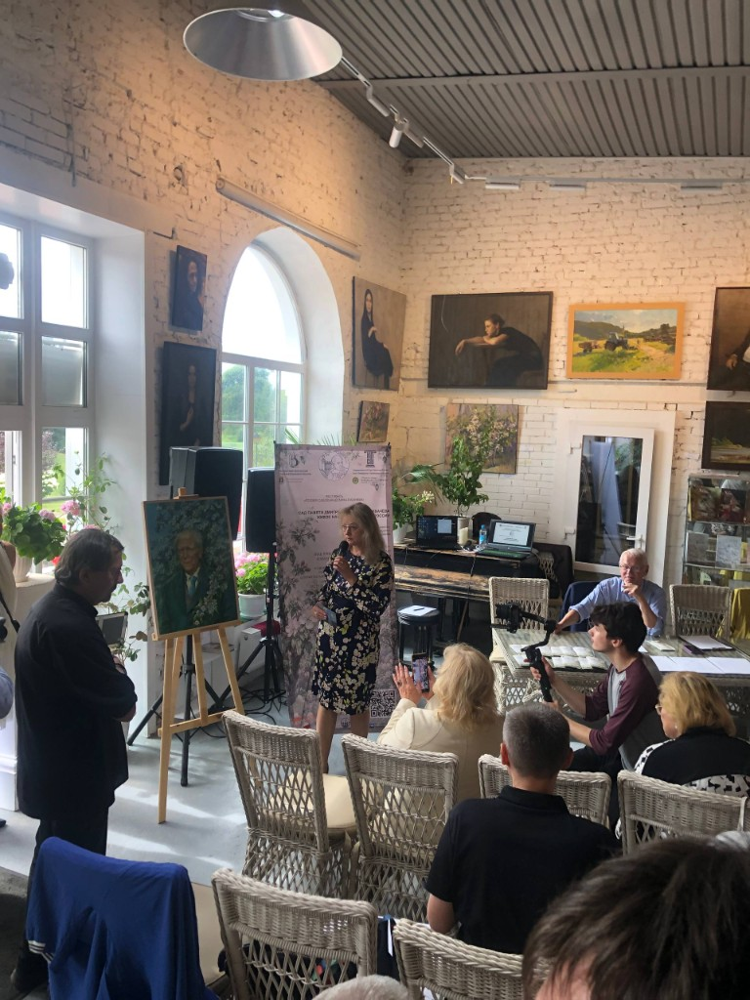
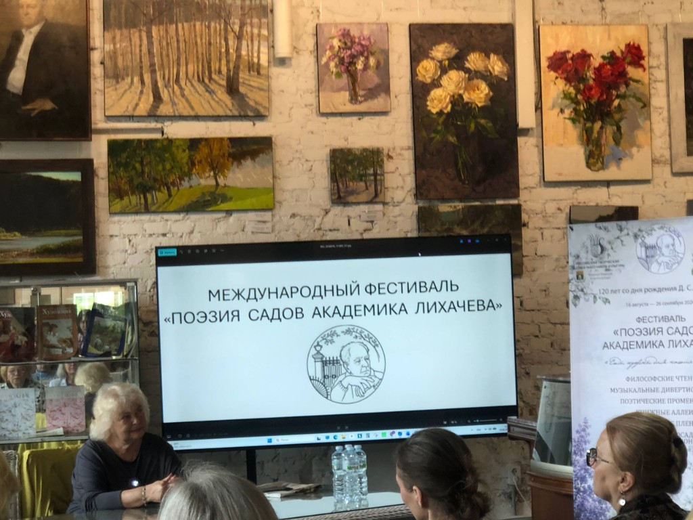
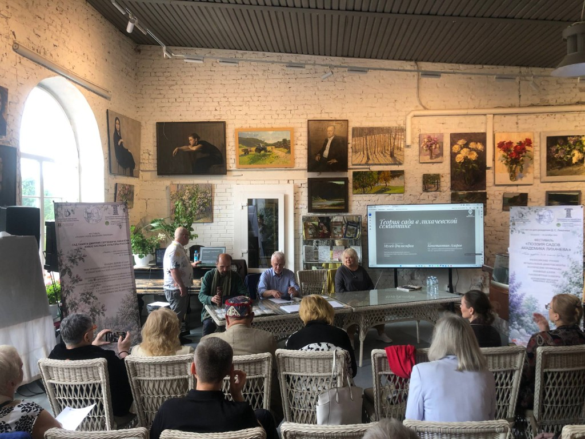
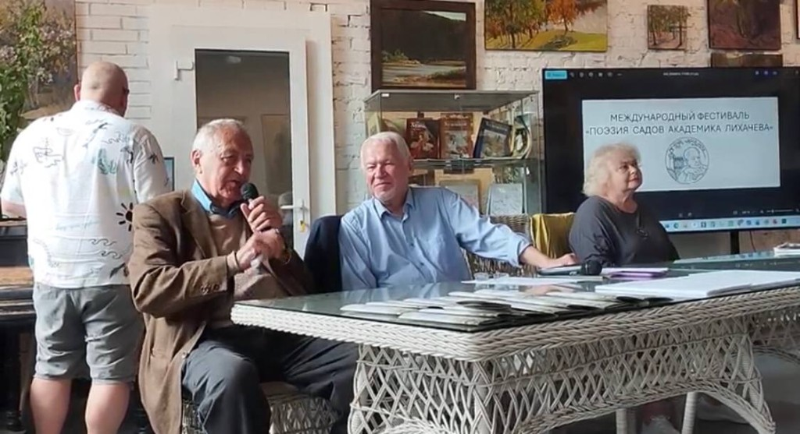
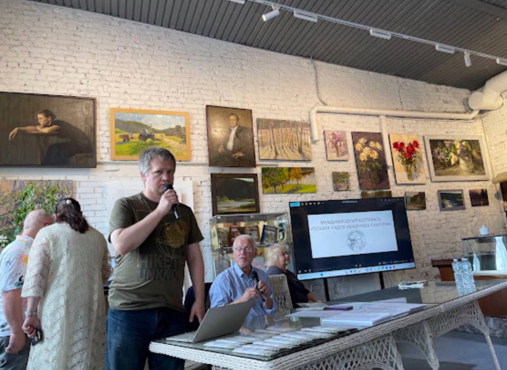
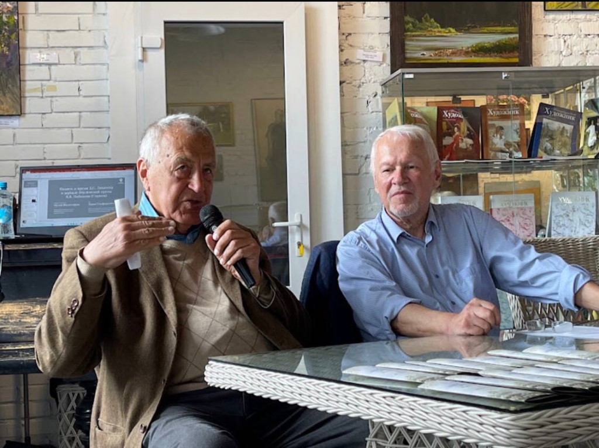
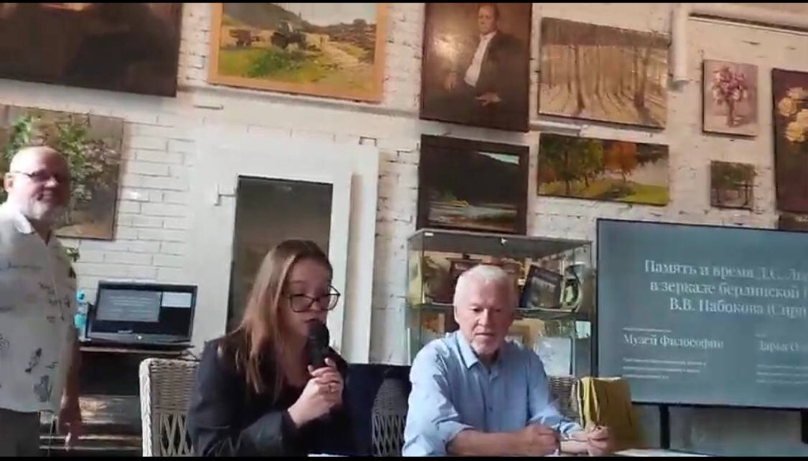
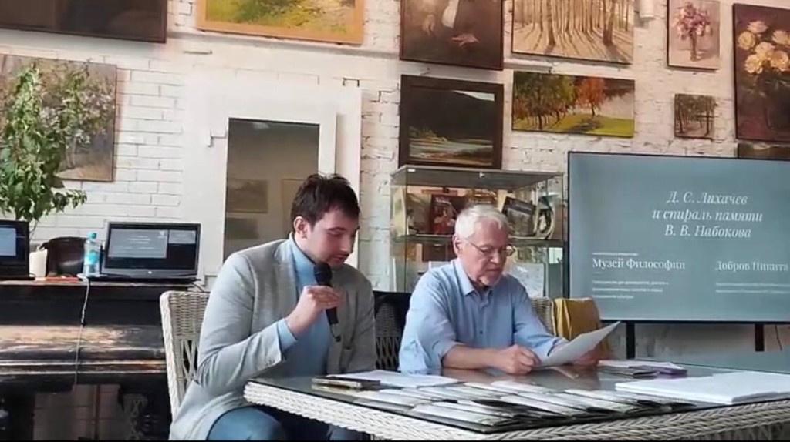

16 августа 2026 года в усадьбе Марьино состоялось торжественное открытие Международного фестиваля «Поэзия садов академика Лихачёва». Одним из соорганизаторов фестиваля выступил Музей философии.
Центральным событием программы стало открытие цикла философских бесед «Сад как модель мироздания». С приветственными словами выступили председатель Правления Российского творческого Союза работников культуры Анатолий Константинов, генеральный директор усадьбы Марьино Галина Степанова и депутат Государственной думы, первый заместитель председателя Комитета по культуре Елена Драпеко.


В философских беседах приняли участие петербургские философы Жанна Николаева, Игорь Ларионов и Константин Азаров. Вместе с директором музея-заповедника «Парк Монрепо» Александром Смирновым и специалистом в области ландшафтной архитектуры Ольгой Черданцевой они обсудили наследие Д. С. Лихачёва, метафизику русского ландшафта и сохранение исторических садов.






Для Музея философии обращение к наследию Д. С. Лихачёва связано с поиском новых форм присутствия философской мысли в культурном пространстве. Сад предстаёт здесь не только как произведение ландшафтного искусства, но и как живая модель мироздания — пространство исторической памяти, человеческого творчества и ответственного диалога с природой.
Участие в организации Международного фестиваля «Поэзия садов академика Лихачёва» стало важным шагом в развитии публичной программы Музея философии и его сотрудничества с культурными, научными и общественными институциями.